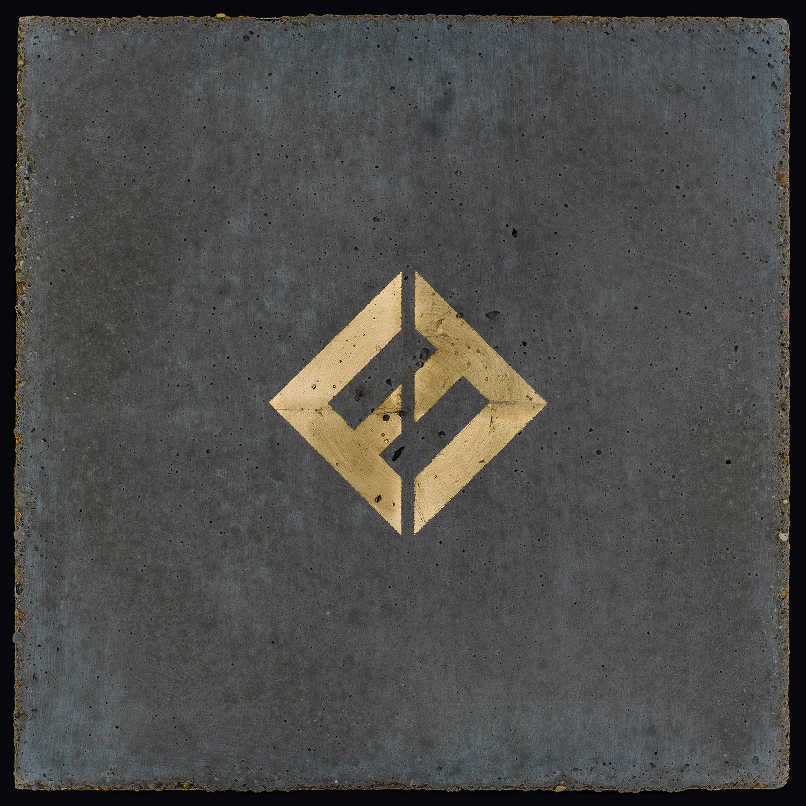

Vinyl Review

Concrete and Gold
Foo Fighters
As an avid music enthusiast and a fan of the Foo Fighters, I eagerly awaited the chance to listen to their
ninth studio album, "Concrete and Gold," on vinyl. Released in 2017, the album sees the band taking some
bold and unexpected turns in their sound, blending their signature rock aesthetic with a more experimental
approach. Produced by Greg Kurstin, who has worked with artists like Adele and Sia, "Concrete and Gold" is
an intriguing addition to the Foo Fighters' discography that showcases their versatility and willingness to
push boundaries.
"Concrete and Gold" kicks off with "T-Shirt," a track that starts off with a deceptively gentle intro before
exploding into a wall of sound. This sets the stage for the rest of the album, which combines soaring
melodies, hard-hitting riffs, and some of the band's most ambitious songwriting to date. Dave Grohl's vocals
are as powerful and emotive as ever, and the band's musicianship is on full display throughout the record.
The album's lead single, "Run," is a prime example of the Foo Fighters' ability to meld their trademark
sound with new and unexpected elements. The track begins with a subdued, atmospheric intro before launching
into an explosive, frenetic chorus that showcases the band's knack for creating irresistible, high-energy
rock anthems.
Another standout track is "The Sky Is a Neighborhood," which features a more laid-back, groovy vibe that
highlights the album's experimental nature. The song's catchy chorus and imaginative lyrics make it a
memorable addition to "Concrete and Gold," and the guest appearance of The Bird and the Bee's Inara George
on backing vocals adds a unique touch to the track.
"Sunday Rain," with its Beatles-esque vibe and guest appearance from Paul McCartney on drums, demonstrates
the band's ability to draw from a diverse range of musical influences while still maintaining their distinct
sound. The track's melodic, sing-along chorus and Taylor Hawkins' lead vocals make it a standout moment on
the album.
The vinyl edition of "Concrete and Gold" is particularly well-suited to showcasing the album's expansive
soundscapes and intricate production. The warmth and depth of the analog format lend themselves perfectly to
the record's experimental nature, providing a truly immersive listening experience.
Final Verdict: "Concrete and Gold" is a daring and adventurous addition to the Foo Fighters'
discography, featuring a blend of their signature rock sound with bold, experimental elements. The vinyl
edition offers an enhanced listening experience that brings out the best in the album's intricate production
and varied influences, making it a must-listen for fans of the band and rock enthusiasts alike.
Did you enjoy my review of this album? Check out one of my favorite album reviews below or see a
list of my reviews!
More importantly, I'm always looking for new music to enjoy. Let
me know what you're currently listening to!
My Favorites
Read why these albums are my all-time favorites!